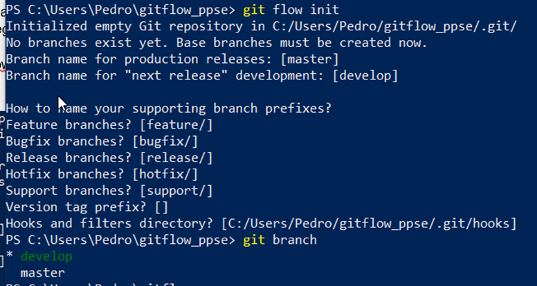

La gestión de código en repositorios puede convertirse en una tarea complicada y enrevesada, con diferentes ramas, usuarios, confirmaciones, conflictos… Se ha establecido una metodología de trabajo o flujo de trabajo para estandarizar el desarrollo de un proyecto usando Git denominado GitFlow, pensado para grandes proyectos aunque puede ser usado en proyectos de cualquier tipo.
Para iniciar un repositorio con GitFlow ejecutar el comando:
git flow init
Este flujo de trabajo define un conjunto de ramas en el que cada una de ellas, al inicial el proyecto se crean:
- Rama master: Almacena el historial de publicación oficial. Se recomienda etiquetar las confirmaciones de la rama master con un número de versión
- Rama develop: Rama de integración.
Establece además el nombre para otras ramas usadas en el desarrollo:
- Feature: Se utilizan para desarrollar funcionalidades, cuando se finaliza la funcionalidad se fusionan en la rama develop. Para crear una rama de función usar:
git flow feature start feature_branch- Release. Rama usada en el caso de disponer de una versión de desarrollo madura o alcanzado un item de entrega. Se crea a partir de la rama develop actual. En esta rama no se añade nuevo contenido proveniente de la rama develop, únicamente se solucionan errores, añade documentación u otras tareas relacionadas con la publicación. Cuando estas tareas se han realizado, se fusiona con la rama master. La creación de una rama release:
git flow release start 0.1.0Y para fusionar con el master:
git flow release finish '0.1.0'- Hotfix. Usada para el mantenimiento y la corrección de las versiones publicadas en producción, por tanto toma como referencia la rama master. Para crear una rama de corrección:
git flow hotfix start hotfix_branchY para fusionar, teniendo en cuenta que son correcciones y se ha de realizar tanto en develop como master:
git flow hotfix finish hotfix_branch- Bugfix. También usada para la corrección, pero referida en este caso a las ramas features, son errores que pueden esperar a la próxima release, por ejemplo una palabra de la interfaz gráfica que debía tener acento.
- Support. En desarrollo, desaconsejado su uso, en el caso de proyectos con varios clientes y alguno de ellos necesita una funcionalidad muy específica que afecta al resto.